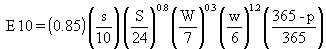

Formulations used to compute
pollutant emissions per unit area resulting from the mechanical disturbances
by vehicle traffic are also based on Cowherd et al. (1985). The pollutant
emission caused by traffic moving over unpaved surfaces is computed using

(7)
where E10 = emission factor for an unpaved
surface expressed as mass suspended per vehicle-kilometer of travel [g/(vehicle-km)]
s = silt content of road surface material (%)
S = mean vehicle speed (km/hr)
W = mean vehicle weight (Mg)
w = mean number of wheels
p = number of days with at least 0.254 mm (0.01 in.) of precipitation per year.
Site-specific information
from local sources is normally obtained for each of the parameters. When
site-specific data are not available, the default values given by Cowherd
et al. (1985), which are listed in Table 2.1, may be used.
Values for p are obtained from a local source of meteorological data.
TABLE 2.1. Default Values for Independent Variables of Equation 7(a,b)
Site
s(%)
S(km/hr)
W(Mg)
w
Rural/Residential
15 (5-68)
48 (40-64)
2
4
Industrial
8 (2-29)
24 (8-32)
3 15 26
4 6 10
(a) Based on Cowherd et al. (1985).
(b) Numbers in parentheses are ranges of measured values.